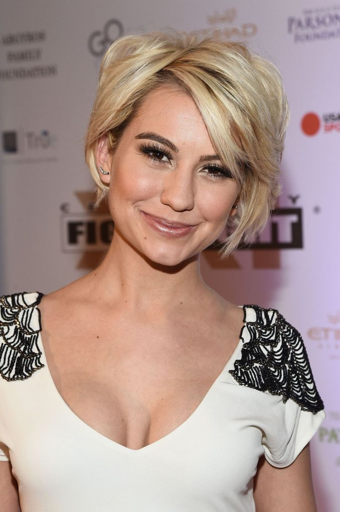

Movies-Fiction! Movies-Fiction!
Movies-Fiction! Movies-Fiction! Description for our page:
This page is made for dreamers like me who paint their own movie scenarios from one they've watched, who write new parts for their favourite movies but in their minds.
Let your imagination enjoys!
yours,
Mariam Atef
Mia Stepank, a young lady, searches for her legimate father who happens to be of the name of "Jack Sparrow". Eventually, she finds him. However, our Jack is suspicious about it and believes that it's a hustle or something. On the other hand, Will's curse still hunts him. The turners begin another adventure to end the curse truly forever this time. What happens next? Will they reunited with Jack? Is Mia really his daughter? How will they stop the curse? the questions are to be answered in the 6th sequel of POC. The movie is expected to be in theatres
| Actor/Actress | Role | |
|---|---|---|
 | Johnny Depp | Jack Sparrow |
| Keira Knightley | Elizabeth Swan | |
| Orlando Bloom | Will Turner | |
| Shailene Woodley | Mia Stepank | |
| Kaya Scodelario | Carina Smyth | |
Previous Parts:
Our next movie is total bomb; a combination of action, romance, comedy, drama and most important, good acting, and when we say good acting we're refering to the huge cast that's in this movie. Suprise. Ravens, Eagles, Falcons, Hawks, Condors and Vultures, those were the 6 teams of the "office", each had their own distinctive traits, yet nearly similar super powers. However, there had always been a war between the Ravens and the Eagles, until the horrible accident happens and it's time to avenge.
| Actor/Actress | Role | |
|---|---|---|
| Chris Evans | Kevin Rhodes | |
| Keira Knightley | Mary Collins | |
| Shailene Woodley | Kate Rhodes | |
| Sam Claflin | Edward Kane | |
| Theo James | James Collins | |
| Dakota Fanning | Lara Kane | |
| Victoria Justice | Jess Parker | |
 | Hugh Laurie | Michael Smith |
| Blake Jenner | Chris Wallford | |
| Colton Haynes | Ben Wallford | |
Other Parts:
Have you missed our old glee clubs and our favourite voices? This new TV show that's based on our old 6-season Glee has come with new cast, songs, events, drama, romance ..etc. Ryder decides to recreate a new Glee club that includes all his old glee club mates, the ones who have joined the NYADA with him, the ones who have joined other universities and the ones that have graduated. The group also decides to let new blood join their team and their first participant is the talented Mary Ford who's a NYADA student and Ryder's crush. So What happens next? that's what we'll know just in GLEE!
| Actor/Actress | Role | |
|---|---|---|
| Victoria Justice | Mary Ford | |
| Blake Jenner | Ryder Flynn | |
Previous Seasons:
The Show| Song | Performed By | Time/Event | |
|---|---|---|---|
| All I Ask - Adele | Victoria Justice | When Ryder heard her singing at the bar for the first time before they meet | |
| I Hate This Part - Pussycat Dolls | Victoria Justice, Lea Michelle | When each of them have issues with their partner and they sing it while they're in the car with them (singing in their minds, their partners don't see it) | |
| Goodbye - Miley Cyrus | Victoria Justice | At the ball when Ryder and Kristen were together, she performed it with tears in her eye and both of them keep staring at each other and she remembers him in everything she hears | |
| Sucker - Jonas Brothers | The Boys | They perform in on the glee quests | |
| A Lovely Night from La La Land | Victoria Justice, Blake Jenner | When they were both auditioninng for the La La Land play and they were at each other, they choose to perform this one unlike all the auditioners who perform city of stars | |
| Someone in the Crowd from La La Land | Victoria Justice, Meliisa Benoist, 2 other girls | When they were convincing Mary to audition for the play | |
Molly and Nora are childhood bestfriends, but things change when each of them introduces the other to her assumed male bestfriend or let's say a crush.
| Actor/Actress | Role | |
|---|---|---|
 | Lily Collins | Molly |
 | Emilia Clarke | Nora |
| Sam Claflin | Alex | |
| Theo James | Steve | |
As a result of reviving the team, it's expected for lost Ravens to reappear and join their family. It's Kevin's responsilibty to protect the family and keep the Ravens united. Finally, the first lost Raven is found by the "office" and sent for Kevin to deal with and add to the team. However, the Eagles are still there and the war is never over.
| Actor/Actress | Role | |
|---|---|---|
| Chris Evans | Kevin Rhodes | |
| Keira Knightley | Mary Collins | |
| Shailene Woodley | Kate Rhodes | |
| Sam Claflin | Edward Kane | |
| Theo James | James Collins | |
| Kaya Scodelario | Olivia Carlton | |
| Dakota Fanning | Lara Kane | |
| Victoria Justice | Jess Parker | |
| Hugh Laurie | Michael Smith |
| Blake Jenner | Chris Wallford | |
| Colton Haynes | Ben Wallford | |
Other Parts:
If you're a FRIENDS' fan then get ready for this show. A new modern sit-com based on our all-time-favourite FRIENDS. A new squad, new life and new journey to live with those guys.
| Actor/Actress | Role | |
|---|---|---|
| Victoria Justice | Elizabeth "Liz" | |
| Ashley Tisdale | Bethany | |
|  | Chelsea Kane Staub | Chloe |
| Blake Jenner | Mathew "Matt" | |
| Drew Seeley | Sebastian | |
| David Henrie | Broody | |
The Ravens are stronger than ever, so all enemies unite at a single aim: excavating the Ravens.
| Actor/Actress | Role | |
|---|---|---|
| Chris Evans | Kevin Rhodes | |
| Keira Knightley | Mary Collins | |
| Shailene Woodley | Kate Rhodes | |
| Sam Claflin | Edward Kane | |
| Theo James | James Collins | |
| Kaya Scodelario | Olivia Carlton | |
| Dakota Fanning | Lara Kane | |
| Victoria Justice | Jess Parker | |
| Hugh Laurie | Michael Smith |
| Blake Jenner | Chris Wallford | |
| Colton Haynes | Ben Wallford | |
Other Parts: